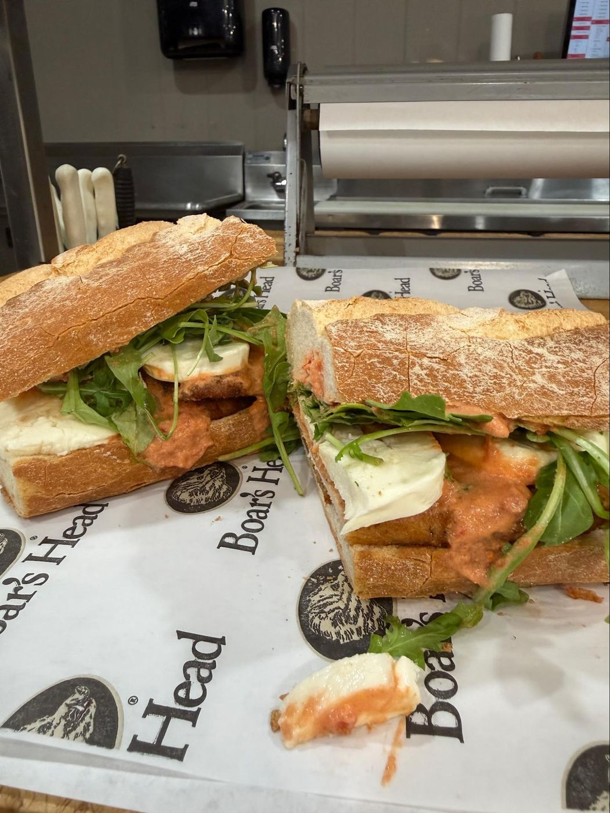

Stop by our Deli for made-to-order sandwiches, featuring Boar's Head premium lunch meats, hearty house-made soups and salads.

Built to order at our deli counter on Brooklyn bread baked in house daily, with homemade soups and salads alongside. Order ahead online and skip the wait.
Ingredients, sizes and current prices for every item — order ahead for quick pickup.
Served on a 10" roll unless noted.
All of our sandwiches are made on Brooklyn bread, baked in house daily. Sandwiches come in 6", 10", 16" and 24" sizes — see Toast for ingredients and current prices. Pickup at 42 Robbinsville-Edinburg Road · (609) 259-1221